set.seed(123) # for reproducibility
# Load required packages
library(here)
library(tidyverse)
library(igraph)1 Networks in data: an introduction to {igraph}
In this lesson, you will learn how to create graphs from data, and how to process and modify igraph objects. At the end of this lesson, you will be able to:
- create graphs from edge lists and adjacency matrices;
- manipulate
igraphobjects; - explore node and edge attributes;
- distinguish different kinds of graphs.
Let’s start by loading the packages we will use.
1.1 Creating igraph objects
1.1.1 Option 1: the make_* functions
The igraph package provides users with a set of functions starting with make_* that can be used to create graphs. The simplest one is make_empty_graph(), which creates an empty graph (no edges) with as many nodes as you wish. For example:
# Creating an empty graph with 10 nodes
g <- make_empty_graph(10)
# Showing the igraph object, and its nodes and edges
gIGRAPH 5cb281c D--- 10 0 --
+ edges from 5cb281c:V(g)+ 10/10 vertices, from 5cb281c:
[1] 1 2 3 4 5 6 7 8 9 10E(g)+ 0/0 edges from 5cb281c:# Quickly visualize the graph
plot(g)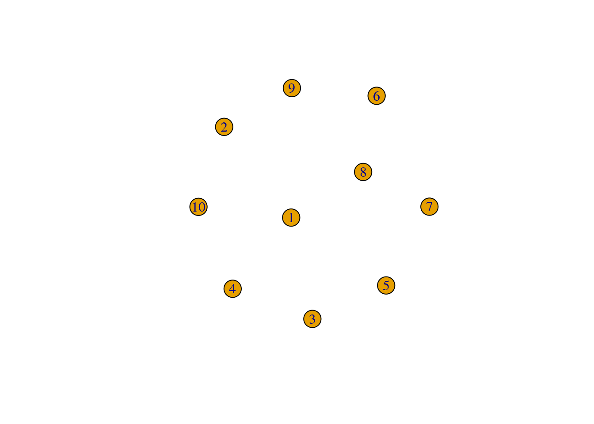
The exact opposite of make_empty_graph() is the function make_full_graph(), which creates a fully connected graph.
# Create a fully connected graph
g <- make_full_graph(n = 10)
# Show nodes and edges, and plot it
V(g)+ 10/10 vertices, from a6620e7:
[1] 1 2 3 4 5 6 7 8 9 10E(g)+ 45/45 edges from a6620e7:
[1] 1-- 2 1-- 3 1-- 4 1-- 5 1-- 6 1-- 7 1-- 8 1-- 9 1--10 2-- 3 2-- 4 2-- 5
[13] 2-- 6 2-- 7 2-- 8 2-- 9 2--10 3-- 4 3-- 5 3-- 6 3-- 7 3-- 8 3-- 9 3--10
[25] 4-- 5 4-- 6 4-- 7 4-- 8 4-- 9 4--10 5-- 6 5-- 7 5-- 8 5-- 9 5--10 6-- 7
[37] 6-- 8 6-- 9 6--10 7-- 8 7-- 9 7--10 8-- 9 8--10 9--10plot(g)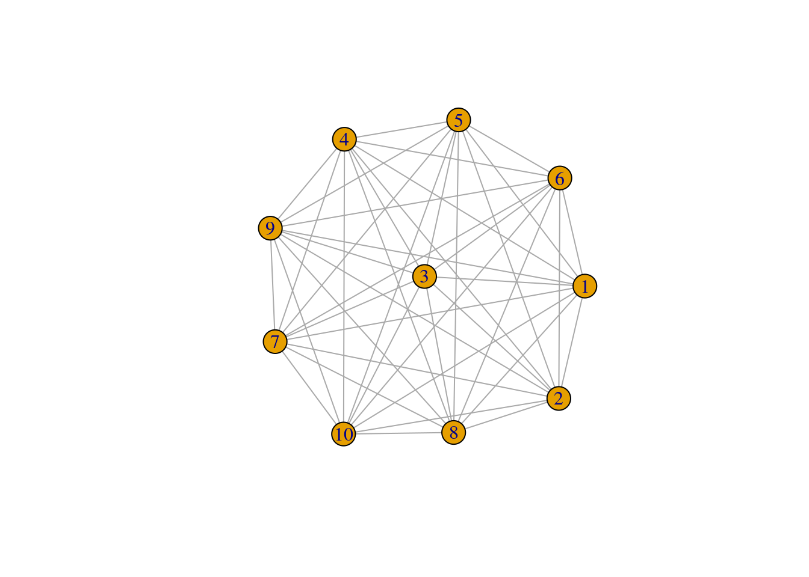
To create a custom graph from pre-defined edges, you’d use the function make_graph(), which is very flexible. For example, suppose you want to create a graph based on the following description:
- 10 nodes;
- 2 edges connecting nodes 1 and 2, and nodes 1 and 5.
You can do that with make_graph() as follows:
g <- make_graph(edges = c(1, 2, 1, 5), n = 10, directed = FALSE)
plot(g)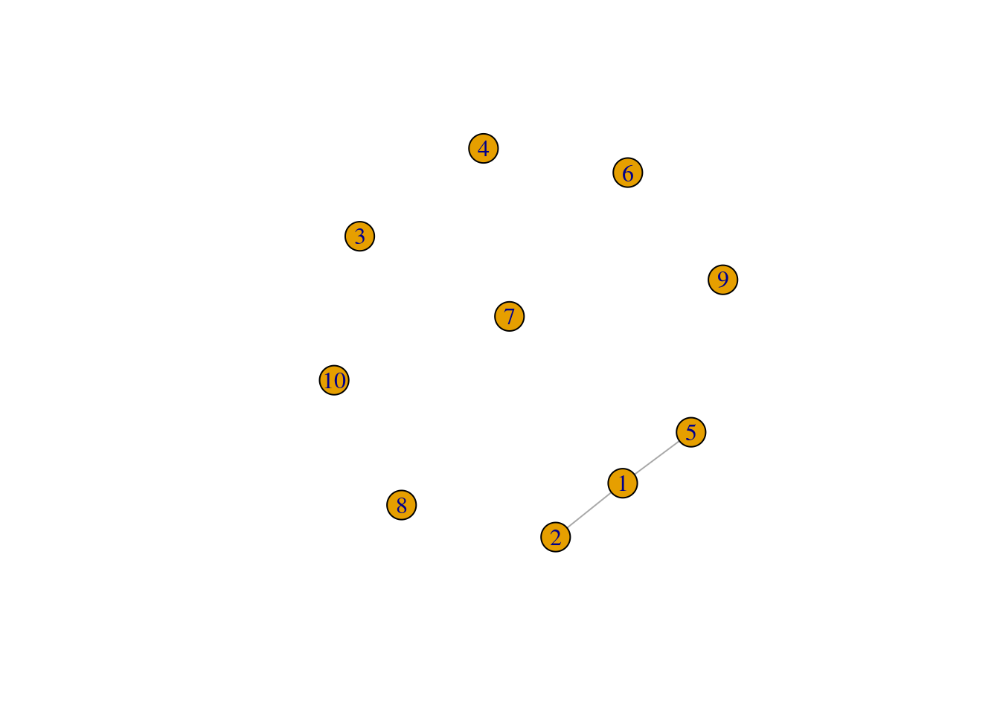
Alternatively, you can use igraph’s formula notation in make_graph():
g2 <- make_graph(~ 1--2, 1--5, 3, 4, 5, 6, 7, 8, 9, 10)
plot(g2)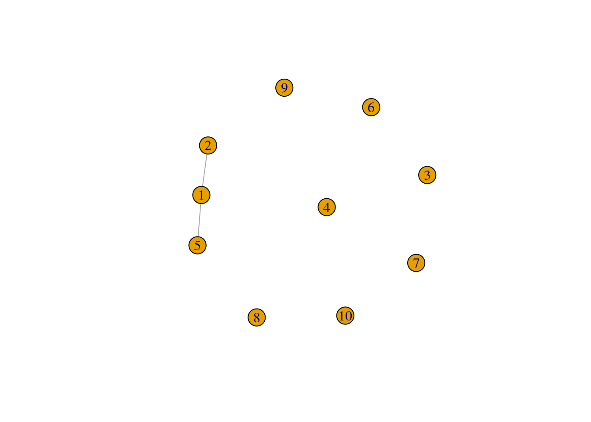
Both approaches above result in the same graph. This can be checked with:
isomorphic(g, g2)[1] TRUE
Practice
- Create a graph with the following properties:
- 4 nodes named A, B, C, and D
- Edges between node A and all other nodes
- Recreate the graphs below using the
make_graph()function.
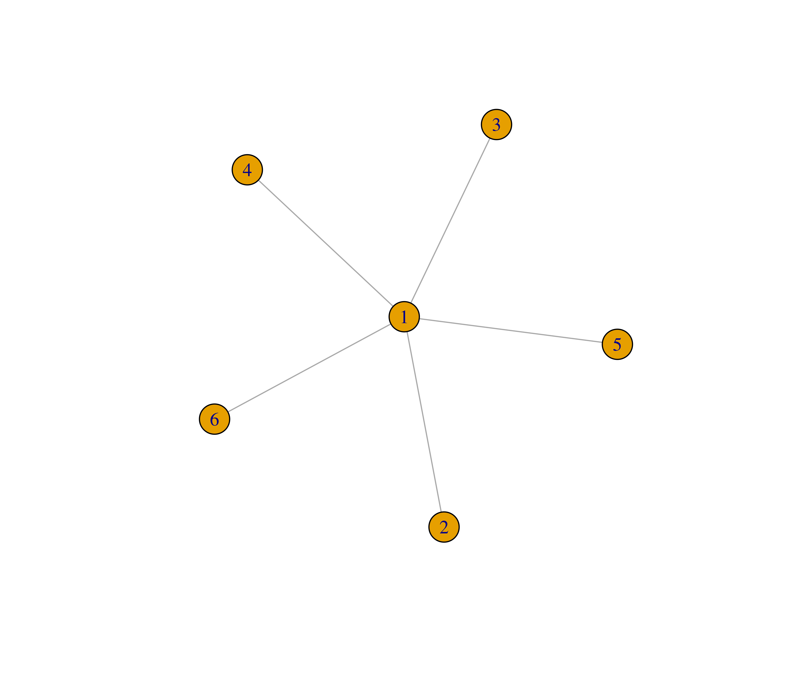
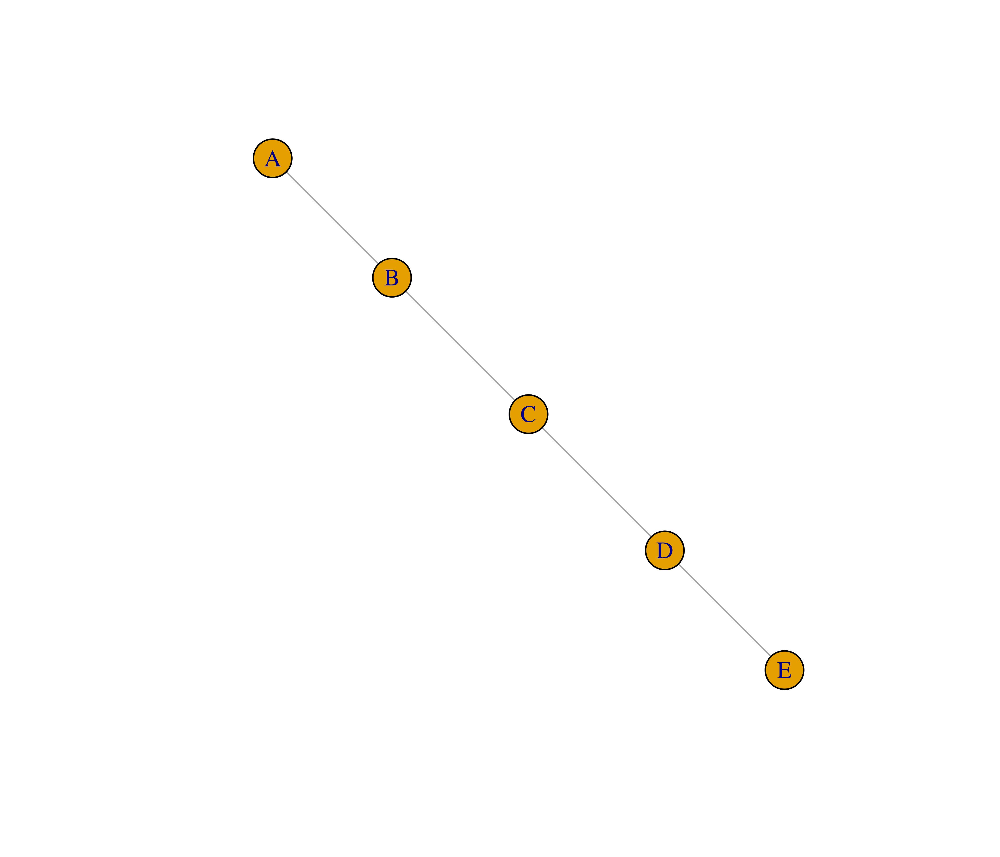
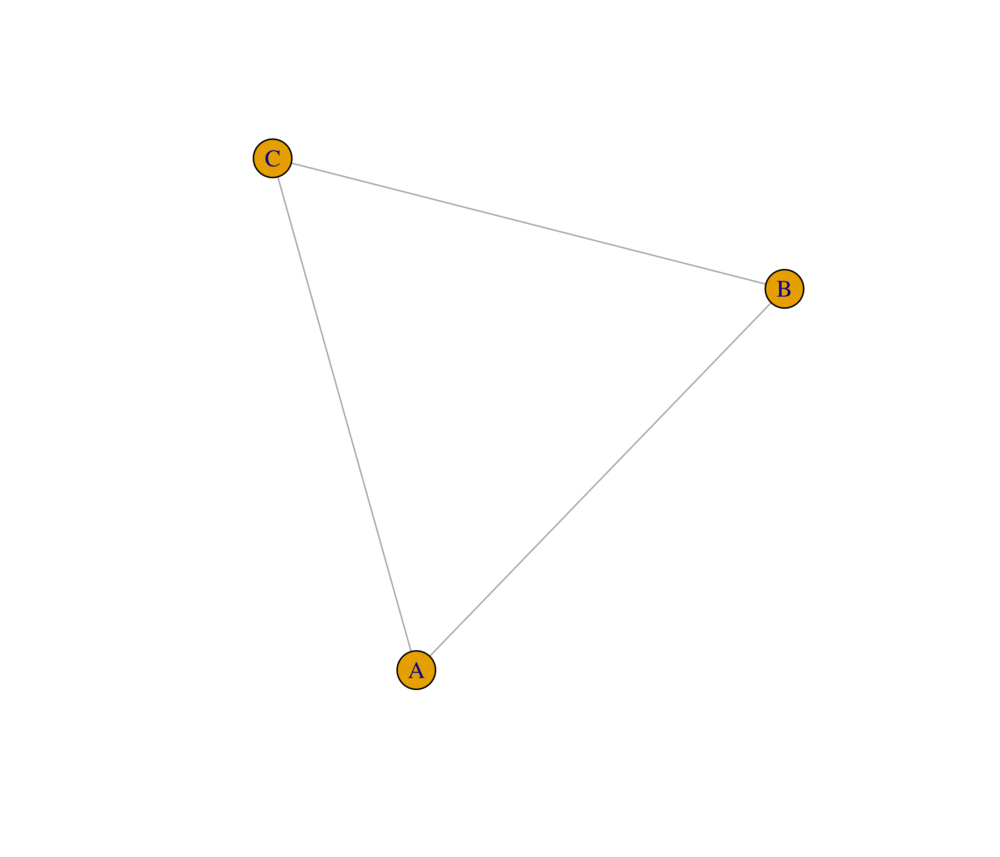
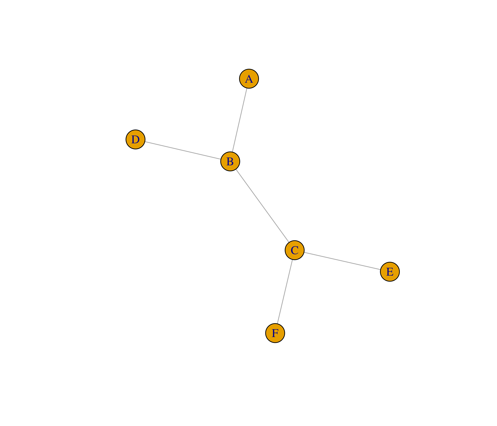
- The function
make_graph()can also create some notable graphs when users specify their names as input. Read the documentation of this function (accessible by running?make_graph) and visualize at least 5 examples.
1.1.2 Option 2: from an adjacency matrix
Constructing graphs manually using the make_graph() function can be useful for schematic examples or for very small graphs. However, real-world network analyses usually involve working with large graphs, with hundreds (or even thousands) of nodes. A very common way of representing networks with data consists in using adjacency matrices. An adjacency matrix \(m_{ij}\) contains nodes in rows and columns, and matrix elements indicate whether there is an edge between nodes i and j. Let’s simulate an adjacency matrix:
# Simulate an adjacency matrix
adjm <- matrix(
sample(0:1, 100, replace = TRUE, prob = c(0.9, 0.1)),
ncol = 10,
dimnames = list(LETTERS[1:10], LETTERS[1:10])
)
adjm A B C D E F G H I J
A 0 0 0 0 0 0 0 1 1 0
B 0 0 1 0 0 0 0 0 0 0
C 0 0 0 0 1 0 0 0 0 1
D 0 0 0 0 0 1 0 0 0 1
E 0 0 0 0 0 1 1 1 0 0
F 0 0 0 0 0 0 0 0 0 0
G 0 0 0 0 1 1 0 0 0 0
H 0 0 0 0 0 0 0 0 0 0
I 0 0 0 0 0 0 0 0 0 0
J 0 0 0 0 0 0 0 0 0 0In this example, we have a binary matrix, with 1 indicating that two nodes interact, and 0 indicating otherwise. We could also have numeric values (e.g., from 0 to 1) in matrix elements instead of 0s and 1s, which would then indicate the strength of the link between two nodes. You can create an igraph object from an adjacency matrix with the function graph_from_adjacency_matrix().
# Create a graph from an adjacency matrix
g <- graph_from_adjacency_matrix(adjm)
gIGRAPH 0acc06b DN-- 10 12 --
+ attr: name (v/c)
+ edges from 0acc06b (vertex names):
[1] A->H A->I B->C C->E C->J D->F D->J E->F E->G E->H G->E G->Fplot(g)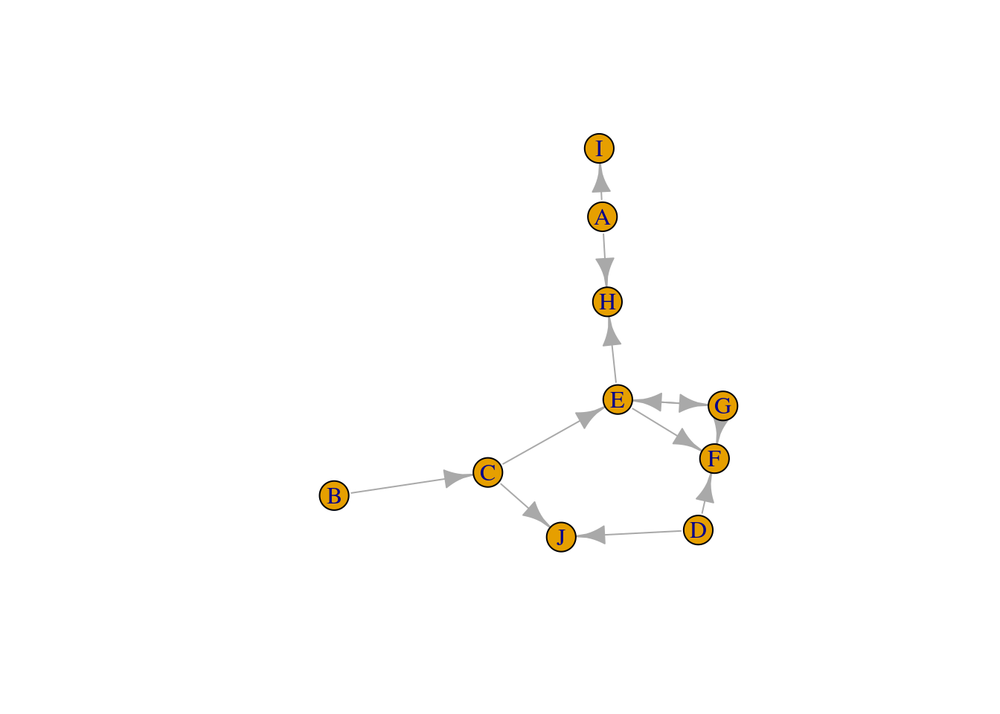
1.1.3 Option 3: from an edge list
Another very common way of representing networks in data consists in using edge lists, which are data frames containing the edges in columns 1 and 2. Any additional columns will be interpreted as (optional) edge attributes. Let’s simulate an edge list.
# Simulate an edge list
edgelist <- data.frame(
from = c("A", "A", "B"),
to = c("B", "C", "C")
)
edgelist from to
1 A B
2 A C
3 B CAs in an adjacency matrix, you could also add a third column indicating the strength of the edge. You can create an igraph object from an edge list with the functions graph_from_edgelist() or graph_from_data_frame().
# Create a graph from an edge list
g <- graph_from_edgelist(as.matrix(edgelist))
g2 <- graph_from_data_frame(edgelist)
identical_graphs(g, g2)[1] TRUEplot(g)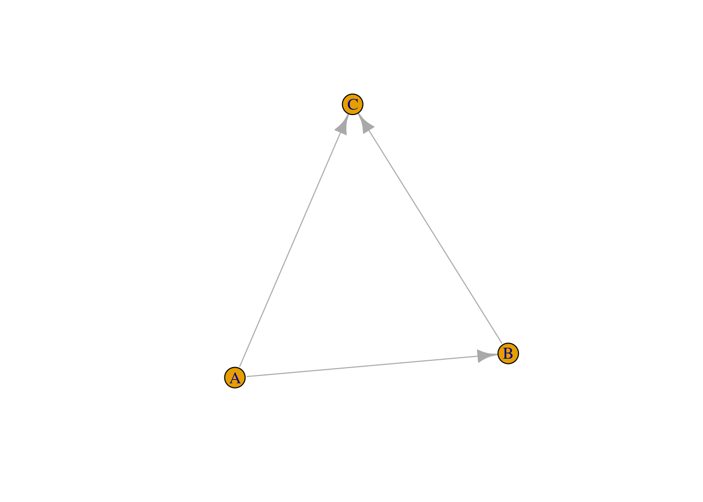
1.2 Understanding and constructing different network types
Graphs can be classified into different types based on edge attributes named directionality and weight. These graph types are:
- Directed vs undirected: in directed graphs, edges have a direction (i.e., from a node to another), while in undirected graphs such directions do not exist.
- Weighted vs unweighted: in weighted graphs, edges have weights indicating the strength of association between two nodes, while in unweighted graphs edges are binary.
To demonstrate how to create these different graph types, consider the edge list below:
# Create edge list with weights
edges <- data.frame(
from = c("A", "A", "B", "C"),
to = c("B", "C", "C", "D"),
weight = sample(seq(0, 1, by = 0.1), 4)
)
edges from to weight
1 A B 0.8
2 A C 0.5
3 B C 0.7
4 C D 0.3You can create four different graph types from this edge list by playing with arguments in graph_from_data_frame():
# Graph 1: unweighted, undirected
g1 <- graph_from_data_frame(edges[, c(1,2)], directed = FALSE)
# Graph 2: unweighted, directed
g2 <- graph_from_data_frame(edges[, c(1,2)], directed = TRUE)
# Graph 3: weighted, undirected
g3 <- graph_from_data_frame(edges, directed = FALSE)
# Graph 4: weighted, directed
g4 <- graph_from_data_frame(edges, directed = TRUE)
# Show igraph objects
list(g1, g2, g3, g4)[[1]]
IGRAPH 7ff90df UN-- 4 4 --
+ attr: name (v/c)
+ edges from 7ff90df (vertex names):
[1] A--B A--C B--C C--D
[[2]]
IGRAPH 8dbda16 DN-- 4 4 --
+ attr: name (v/c)
+ edges from 8dbda16 (vertex names):
[1] A->B A->C B->C C->D
[[3]]
IGRAPH 582f71d UNW- 4 4 --
+ attr: name (v/c), weight (e/n)
+ edges from 582f71d (vertex names):
[1] A--B A--C B--C C--D
[[4]]
IGRAPH 247f104 DNW- 4 4 --
+ attr: name (v/c), weight (e/n)
+ edges from 247f104 (vertex names):
[1] A->B A->C B->C C->DWhen the edge list includes a third column with a numeric variable, the function graph_from_data_frame() automatically adds it as an edge attribute named weight. You can add as many edge attributes as you wish.
Besides adding edge attributes, you can also add node (or vertex) attributes. In the example below, we create a more complex graph, with multiple edge and node attributes.
# Create edge list with two edge attributes
edges <- data.frame(
from = c("A", "A", "B", "C"),
to = c("B", "C", "C", "D"),
weight = sample(seq(-1, 1, by = 0.1), 4)
)
edges$weight_type <- ifelse(edges$weight > 0, "positive", "negative")
edges from to weight weight_type
1 A B 0.0 negative
2 A C 1.0 positive
3 B C -0.2 negative
4 C D 0.5 positive# Create a data frame of node attributes
node_attrs <- data.frame(
node = c("A", "B", "C", "D"),
group = c(1, 1, 2, 2)
)
node_attrs node group
1 A 1
2 B 1
3 C 2
4 D 2# Create a graph with both edge and node attributes
cg <- graph_from_data_frame(edges, directed = FALSE, vertices = node_attrs)
cgIGRAPH c1988bd UNW- 4 4 --
+ attr: name (v/c), group (v/n), weight (e/n), weight_type (e/c)
+ edges from c1988bd (vertex names):
[1] A--B A--C B--C C--D# Printing node and edge attributes
vertex_attr_names(cg)[1] "name" "group"edge_attr_names(cg)[1] "weight" "weight_type"
Practice
- The code below creates a correlation matrix from the
mtcarsdata set. Use this correlation matrix to create an undirected weighted graph.
cormat <- cor(t(mtcars[, c(1, 3:7)]))- The code below converts the correlation matrix created above to an edge list. Create the same graph you created before, but now from an edge list. Then, check if graphs are indeed the same.
Hint: use the simplify() function to remove loops (edges that connect a node to itself).
cormat_edges <- reshape2::melt(cormat)From the edge list created above, add an edge attribute named
strengththat contains the character strong for edges with weight >=0.9, and moderate otherwise. Then, create a graph and inspect this attribute.From the edge list created in question 3, create a data frame of node attributes containing an attribute named
brandcontaining the brands of each car.
1.3 Manipulating igraph objects
To add or remove nodes from an igraph object, you can use the functions add_vertices() and delete_vertices() as demonstrated below:
# Create empty graph with 4 nodes
g <- make_empty_graph(4)
plot(g)
# Add 3 nodes
g <- add_vertices(g, 3)
plot(g)
# Remove nodes 6 and 7
g <- delete_vertices(g, c(6, 7))
plot(g)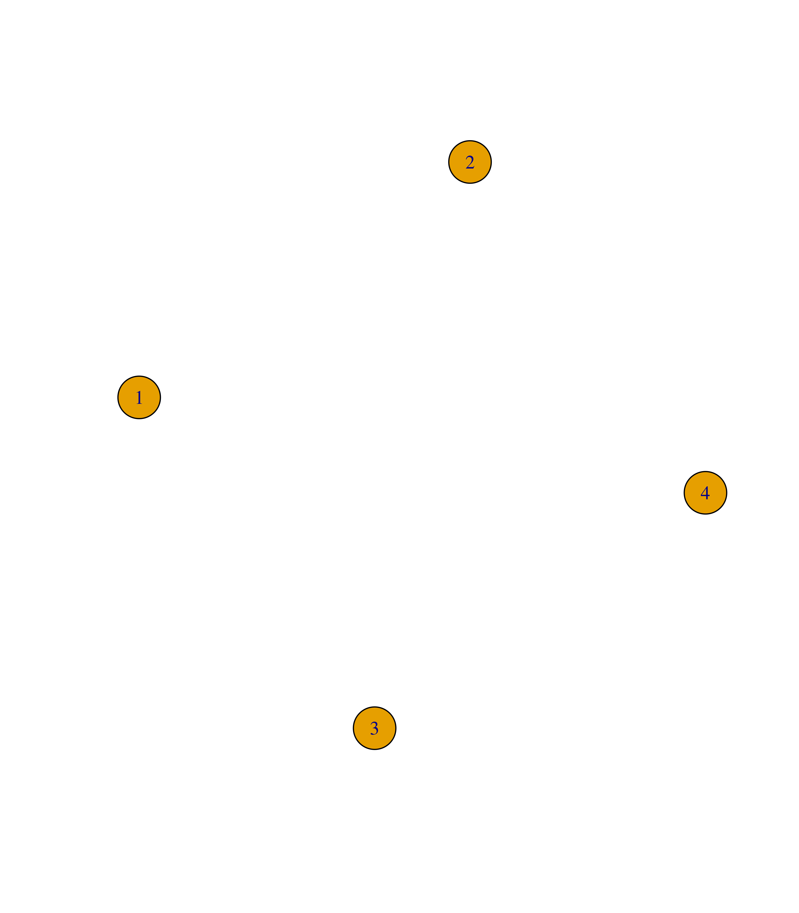
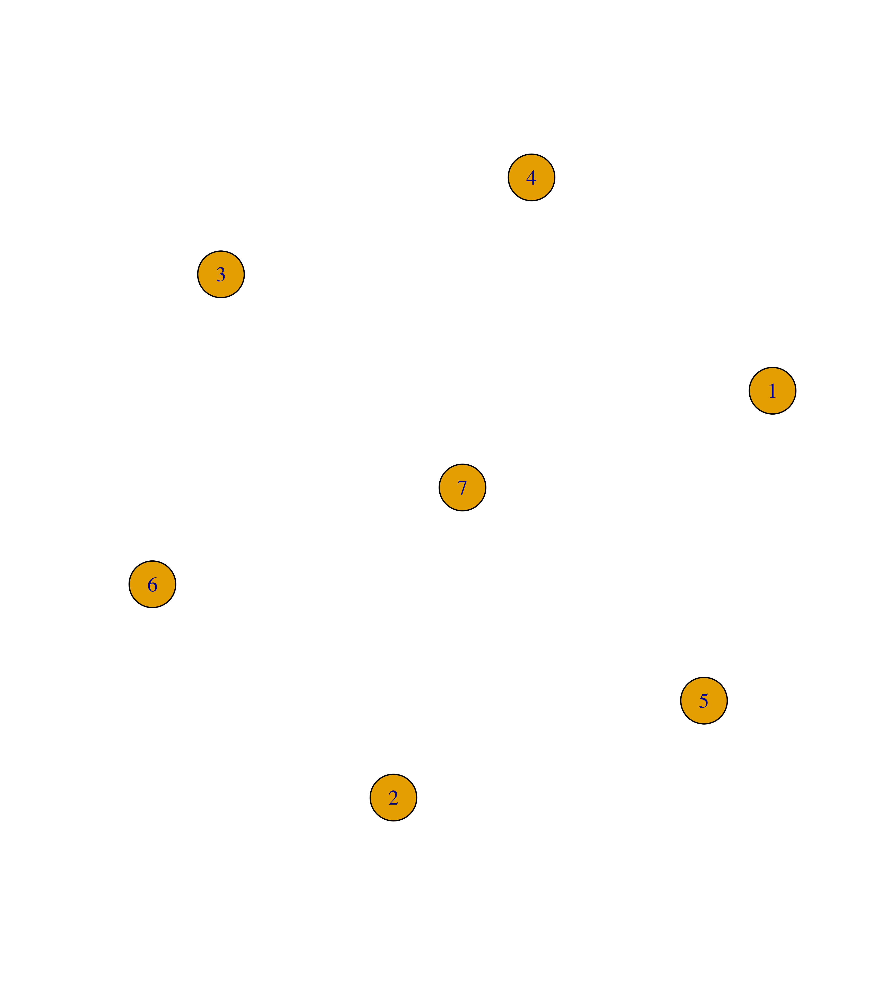
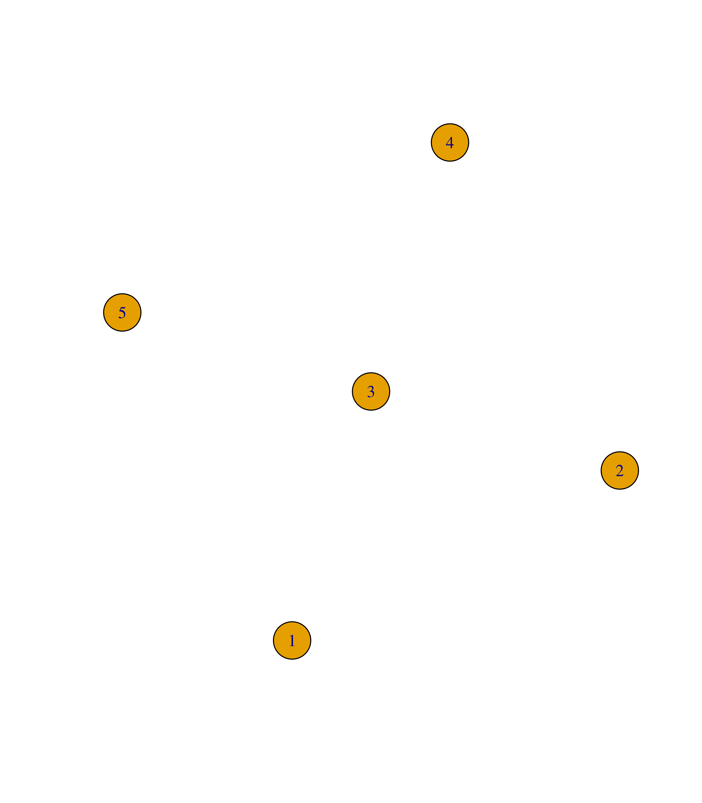
Similarly, you can add edges to an igraph object with the function add_edges().
# Create empty graph with 4 nodes
g <- make_empty_graph(4)
plot(g)
# Add edges 1--2, 1--3 and 1--4
g <- add_edges(g, edges = c(1,2, 1,3, 1,4))
plot(g)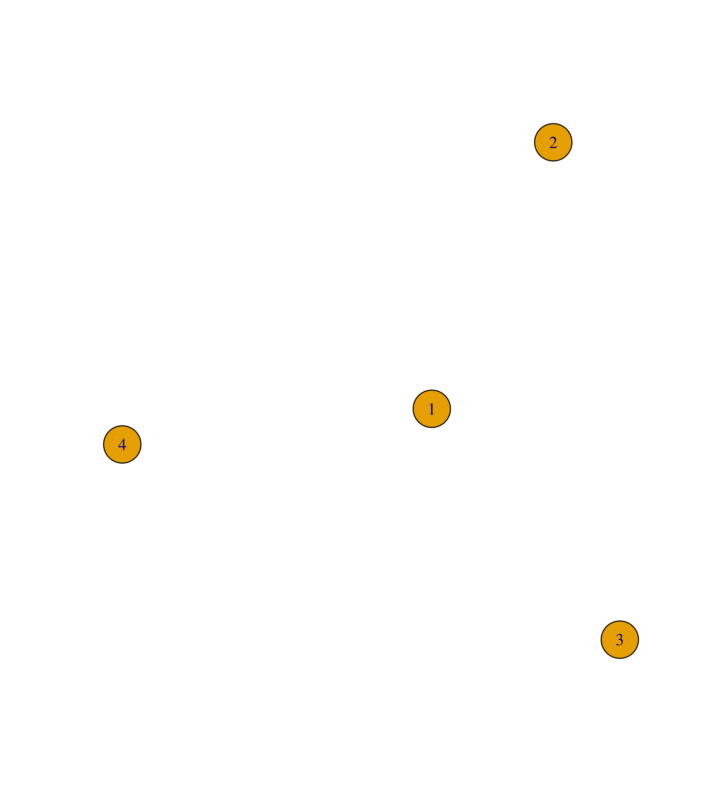
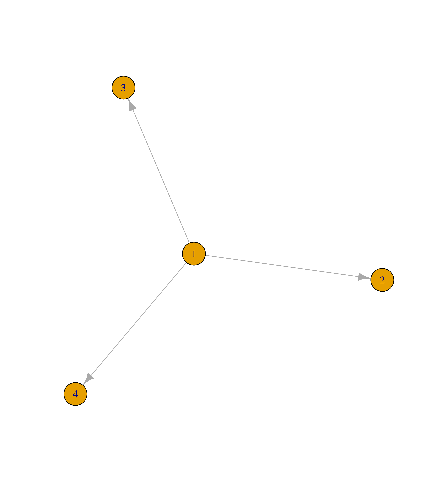
To remove edges, you will first need to get the IDs of the edges you want to remove. This can be done with the function get.edge_ids(). Once you have the IDs of the edges to be removed, you can use the function delete_edges() to do so.
# Get IDs of edges 1--2 and 1--3
ids_remove <- get.edge.ids(g, c(1,2, 1,3))
# Remove edges indicated in `ids_remove`
g <- delete_edges(g, ids_remove)
plot(g)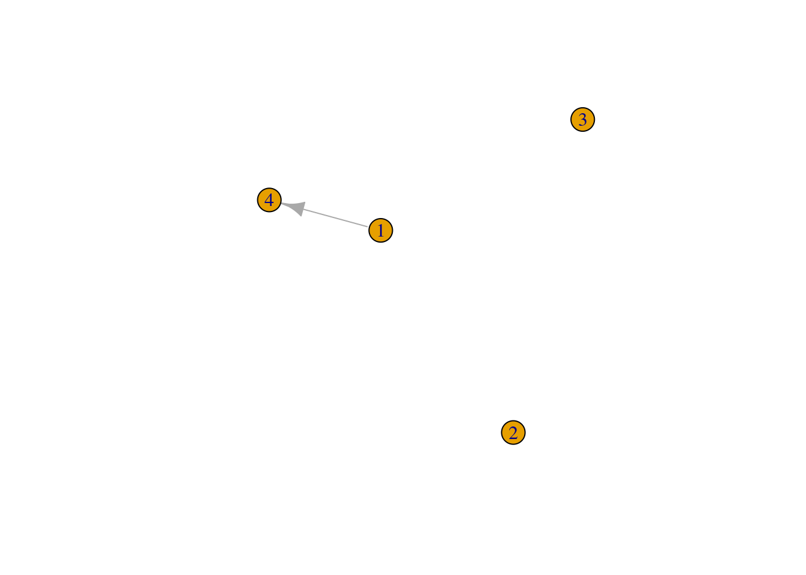
Besides adding/removing nodes and edges, you can also add/remove node and edge attributes. These can be done in two ways: with the functions set_vertex_attr() and set_edge_attr(), or using the $ operator in the output of V() and E() the same way you do when adding a variable to a data frame. For example, consider the graph below.
# Create graph using the 'Zachary' (karate club) data set
g <- make_graph("Zachary")
plot(g)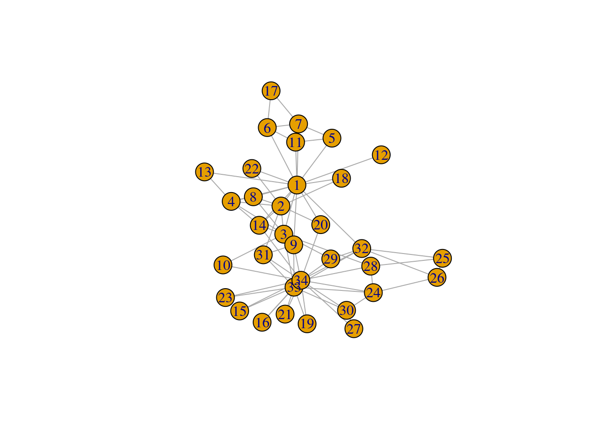
You can add node attributes using one of the following approaches:
# Simulate a node attribute `sex` with 'male' and 'female'
sex <- sample(c("male", "female"), vcount(g), replace = TRUE)
# Approach 1: set_vertex_attr()
g1 <- set_vertex_attr(g, "gender", value = sex)
vertex_attr_names(g1)[1] "gender"V(g1)$gender [1] "male" "female" "female" "male" "male" "male" "female" "male"
[9] "male" "female" "male" "male" "female" "male" "male" "male"
[17] "male" "male" "female" "female" "male" "male" "male" "female"
[25] "male" "female" "male" "male" "male" "female" "female" "female"
[33] "female" "male" # Approach 2: $ operator
g2 <- g
V(g2)$gender <- sex
vertex_attr_names(g2)[1] "gender"V(g2)$gender [1] "male" "female" "female" "male" "male" "male" "female" "male"
[9] "male" "female" "male" "male" "female" "male" "male" "male"
[17] "male" "male" "female" "female" "male" "male" "male" "female"
[25] "male" "female" "male" "male" "male" "female" "female" "female"
[33] "female" "male" # Checking if graphs are the same
identical_graphs(g1, g2)[1] TRUEThe same can be done for edge attributes.
# Simulate an edge attribute `weight`
weight <- runif(ecount(g), 0, 1)
# Approach 1: set_edge_attr()
g1 <- set_edge_attr(g, "weight", value = weight)
edge_attr_names(g1)[1] "weight"E(g1)$weight [1] 0.90738049 0.37635786 0.34531326 0.21946586 0.13228278 0.13507009
[7] 0.08853259 0.78730386 0.35807888 0.29391158 0.40450132 0.13381784
[13] 0.46851664 0.96685776 0.43449663 0.20073533 0.91053219 0.06783826
[19] 0.82759449 0.23656741 0.27750932 0.67660508 0.71850210 0.59585793
[25] 0.90803670 0.96113321 0.30684454 0.32653913 0.17554868 0.47100477
[31] 0.16614016 0.01465749 0.57004785 0.01040247 0.05366550 0.93736147
[37] 0.27528845 0.49616664 0.38447575 0.83071796 0.96821445 0.42522784
[43] 0.61622431 0.43404264 0.50350546 0.70605198 0.84839995 0.81655145
[49] 0.83680556 0.82331943 0.94625621 0.10089687 0.92175100 0.09025842
[55] 0.01070081 0.31031531 0.77869046 0.74516384 0.07696548 0.52209787
[61] 0.06152497 0.81003844 0.78088586 0.55043131 0.08312209 0.11898886
[67] 0.07949653 0.58837430 0.88259873 0.95365913 0.85435595 0.32205234
[73] 0.71748372 0.96839190 0.68511963 0.46812786 0.26695170 0.07534844# Approach 2: $ operator
g2 <- g
E(g2)$weight <- weight
edge_attr_names(g2)[1] "weight"E(g2)$weight [1] 0.90738049 0.37635786 0.34531326 0.21946586 0.13228278 0.13507009
[7] 0.08853259 0.78730386 0.35807888 0.29391158 0.40450132 0.13381784
[13] 0.46851664 0.96685776 0.43449663 0.20073533 0.91053219 0.06783826
[19] 0.82759449 0.23656741 0.27750932 0.67660508 0.71850210 0.59585793
[25] 0.90803670 0.96113321 0.30684454 0.32653913 0.17554868 0.47100477
[31] 0.16614016 0.01465749 0.57004785 0.01040247 0.05366550 0.93736147
[37] 0.27528845 0.49616664 0.38447575 0.83071796 0.96821445 0.42522784
[43] 0.61622431 0.43404264 0.50350546 0.70605198 0.84839995 0.81655145
[49] 0.83680556 0.82331943 0.94625621 0.10089687 0.92175100 0.09025842
[55] 0.01070081 0.31031531 0.77869046 0.74516384 0.07696548 0.52209787
[61] 0.06152497 0.81003844 0.78088586 0.55043131 0.08312209 0.11898886
[67] 0.07949653 0.58837430 0.88259873 0.95365913 0.85435595 0.32205234
[73] 0.71748372 0.96839190 0.68511963 0.46812786 0.26695170 0.07534844# Checking if graphs are the same
identical_graphs(g1, g2)[1] TRUE
Practice
- Use the code below to create an
igraphobject.
# Create `igraph` object from mtcars data set
graph <- cor(t(mtcars[, c(1, 3:7)])) |>
graph_from_adjacency_matrix(
mode = "undirected", weighted = TRUE, diag = FALSE
)Then, add the following attributes:
- An edge attribute named
strengththat contains the character strong for edges with weight >=0.9, and moderate otherwise. - A node attribute named
brandcontaining the brands of each car.
Hint: this is the same exercise you did in a previous section, but now you’re adding attributes using the igraph object itself, not the graph’s edge list.
- Using the graph created above, remove edges with attribute
weight<0.95.
Hint: you can use logical subsetting to extract edges that match the required condition.
1.4 Subsetting nodes and edges
To subset particular nodes and edges from an igraph object, you can use subsetting (logical or index-based) based on the output of V() and E(), respectively. For instance, consider the graph below:
# Create Scooby-Doo network
edges <- data.frame(
from = c("Fred", "Fred", "Fred", "Velma", "Daphne", "Shaggy"),
to = c("Velma", "Daphne", "Shaggy", "Shaggy", "Shaggy", "Scooby")
)
g <- graph_from_data_frame(edges, directed = FALSE)
gIGRAPH dc1e72d UN-- 5 6 --
+ attr: name (v/c)
+ edges from dc1e72d (vertex names):
[1] Fred --Velma Fred --Daphne Fred --Shaggy Velma --Shaggy Daphne--Shaggy
[6] Shaggy--Scoobyplot(g)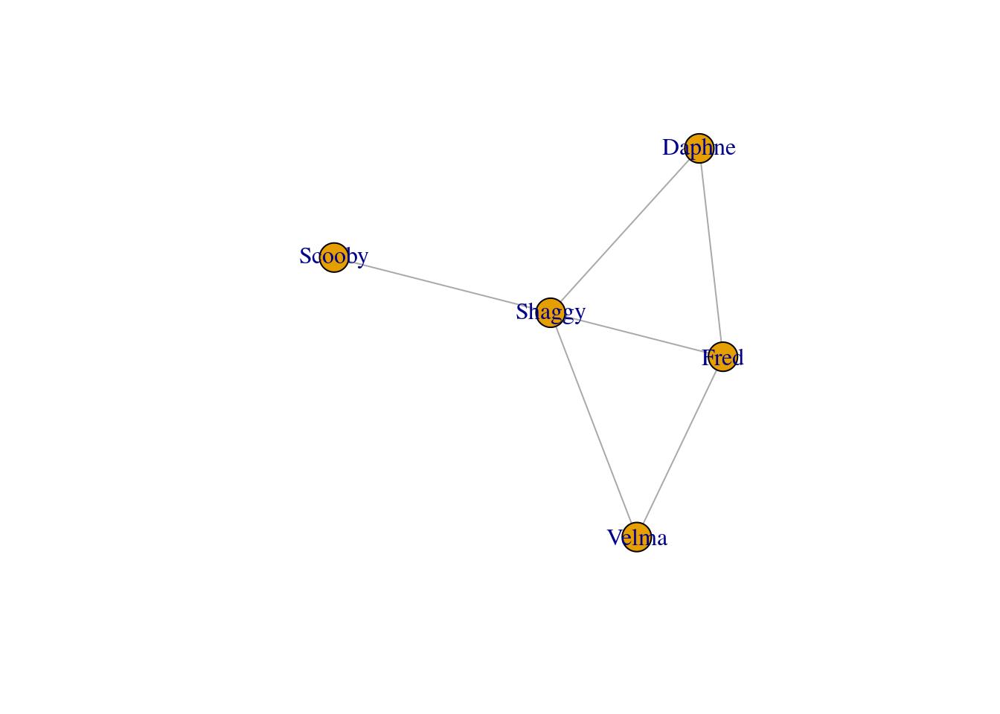
To demonstrate how to subset nodes, let’s subset only nodes ‘Shaggy’ and ‘Scooby’.
# Subset nodes 'Scooby' and 'Shaggy'
V(g)["Scooby", "Shaggy"]+ 2/5 vertices, named, from dc1e72d:
[1] Scooby Shaggy# Same, but using indices
V(g)[c(4,5)]+ 2/5 vertices, named, from dc1e72d:
[1] Shaggy Scooby# Same again, but using logical subsetting
V(g)[startsWith(name, "S")]+ 2/5 vertices, named, from dc1e72d:
[1] Shaggy ScoobyIn the third example above, note how node attributes (name) can be directly used for subsetting inside the brackets of V().
To subset edges, you’d use the same approach, but now with the E() function. As an example, let’s subset all edges that include node ‘Shaggy’.
# Subset edges including node 'Shaggy'
E(g)[.from("Shaggy")]+ 4/6 edges from dc1e72d (vertex names):
[1] Fred --Shaggy Velma --Shaggy Daphne--Shaggy Shaggy--Scooby# Same, but using indices
E(g)[3:6]+ 4/6 edges from dc1e72d (vertex names):
[1] Fred --Shaggy Velma --Shaggy Daphne--Shaggy Shaggy--Scooby
Practice
Use the code below to load an igraph object containing character relationships in the TV show “Game of Thrones”.
# Load Game of Thrones network
got <- readRDS(here("data", "got.rds"))Then, subset the edges that include the characters ‘Arya’, ‘Sansa’, ‘Jon’, ‘Robb’, ‘Bran’, and ‘Rickon’. Which of these characters has more connections?
1.5 Exporting graphs
Sometimes, users want to export their igraph objects to a file so they can visualize them in a network visualization software. This can be done with the function write_graph(), which exports igraph objects to multiple formats specified in the argument format (see ?write_graph() for details).
For example, Cytoscape is a very popular graph visualization tool, and it can take graphs as edge lists. To export igraph objects to edge lists, you could use the following code:
# Export graph in `g` to a file named 'edgelist.txt'
write_graph(g, file = "edgelist.txt", format = "edgelist")Session information
This chapter was created under the following conditions:
─ Session info ───────────────────────────────────────────────────────────────
setting value
version R version 4.3.2 (2023-10-31)
os Ubuntu 22.04.3 LTS
system x86_64, linux-gnu
ui X11
language (EN)
collate en_US.UTF-8
ctype en_US.UTF-8
tz Europe/Brussels
date 2024-04-19
pandoc 3.1.1 @ /usr/lib/rstudio/resources/app/bin/quarto/bin/tools/ (via rmarkdown)
─ Packages ───────────────────────────────────────────────────────────────────
package * version date (UTC) lib source
cli 3.6.2 2023-12-11 [1] CRAN (R 4.3.2)
colorspace 2.1-0 2023-01-23 [1] CRAN (R 4.3.2)
digest 0.6.34 2024-01-11 [1] CRAN (R 4.3.2)
dplyr * 1.1.4 2023-11-17 [1] CRAN (R 4.3.2)
evaluate 0.23 2023-11-01 [1] CRAN (R 4.3.2)
fansi 1.0.6 2023-12-08 [1] CRAN (R 4.3.2)
fastmap 1.1.1 2023-02-24 [1] CRAN (R 4.3.2)
forcats * 1.0.0 2023-01-29 [1] CRAN (R 4.3.2)
generics 0.1.3 2022-07-05 [1] CRAN (R 4.3.2)
ggplot2 * 3.5.0 2024-02-23 [1] CRAN (R 4.3.2)
glue 1.7.0 2024-01-09 [1] CRAN (R 4.3.2)
gtable 0.3.4 2023-08-21 [1] CRAN (R 4.3.2)
here * 1.0.1 2020-12-13 [1] CRAN (R 4.3.2)
hms 1.1.3 2023-03-21 [1] CRAN (R 4.3.2)
htmltools 0.5.7 2023-11-03 [1] CRAN (R 4.3.2)
htmlwidgets 1.6.4 2023-12-06 [1] CRAN (R 4.3.2)
igraph * 2.0.1.1 2024-01-30 [1] CRAN (R 4.3.2)
jsonlite 1.8.8 2023-12-04 [1] CRAN (R 4.3.2)
knitr 1.45 2023-10-30 [1] CRAN (R 4.3.2)
lifecycle 1.0.4 2023-11-07 [1] CRAN (R 4.3.2)
lubridate * 1.9.3 2023-09-27 [1] CRAN (R 4.3.2)
magrittr 2.0.3 2022-03-30 [1] CRAN (R 4.3.2)
munsell 0.5.0 2018-06-12 [1] CRAN (R 4.3.2)
pillar 1.9.0 2023-03-22 [1] CRAN (R 4.3.2)
pkgconfig 2.0.3 2019-09-22 [1] CRAN (R 4.3.2)
plyr 1.8.9 2023-10-02 [1] CRAN (R 4.3.2)
purrr * 1.0.2 2023-08-10 [1] CRAN (R 4.3.2)
R6 2.5.1 2021-08-19 [1] CRAN (R 4.3.2)
Rcpp 1.0.12 2024-01-09 [1] CRAN (R 4.3.2)
readr * 2.1.5 2024-01-10 [1] CRAN (R 4.3.2)
reshape2 1.4.4 2020-04-09 [1] CRAN (R 4.3.2)
rlang 1.1.3 2024-01-10 [1] CRAN (R 4.3.2)
rmarkdown 2.25 2023-09-18 [1] CRAN (R 4.3.2)
rprojroot 2.0.4 2023-11-05 [1] CRAN (R 4.3.2)
rstudioapi 0.15.0 2023-07-07 [1] CRAN (R 4.3.2)
scales 1.3.0 2023-11-28 [1] CRAN (R 4.3.2)
sessioninfo 1.2.2 2021-12-06 [1] CRAN (R 4.3.2)
stringi 1.8.3 2023-12-11 [1] CRAN (R 4.3.2)
stringr * 1.5.1 2023-11-14 [1] CRAN (R 4.3.2)
tibble * 3.2.1 2023-03-20 [1] CRAN (R 4.3.2)
tidyr * 1.3.1 2024-01-24 [1] CRAN (R 4.3.2)
tidyselect 1.2.0 2022-10-10 [1] CRAN (R 4.3.2)
tidyverse * 2.0.0 2023-02-22 [1] CRAN (R 4.3.2)
timechange 0.3.0 2024-01-18 [1] CRAN (R 4.3.2)
tzdb 0.4.0 2023-05-12 [1] CRAN (R 4.3.2)
utf8 1.2.4 2023-10-22 [1] CRAN (R 4.3.2)
vctrs 0.6.5 2023-12-01 [1] CRAN (R 4.3.2)
withr 3.0.0 2024-01-16 [1] CRAN (R 4.3.2)
xfun 0.42 2024-02-08 [1] CRAN (R 4.3.2)
yaml 2.3.8 2023-12-11 [1] CRAN (R 4.3.2)
[1] /home/faalm/R/x86_64-pc-linux-gnu-library/4.3
[2] /usr/local/lib/R/site-library
[3] /usr/lib/R/site-library
[4] /usr/lib/R/library
──────────────────────────────────────────────────────────────────────────────